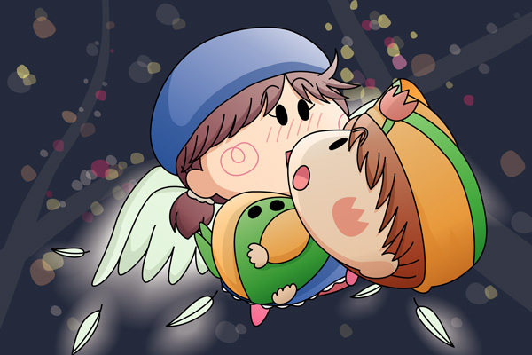

マンボ「・・・はっ、ここは・・・？」
目の前には真っ暗な空が広がっていました。
そして自分の体が何者に抱きかかえられていることにマンボはようやく気がつきました。
マンボ「怪盗チョコソフト！？」
ソフト「目が覚めたぽよね、マンボくん」
ソフトは光る羽根を羽ばたかせながらさらに上昇していきました。

マンボ「これはいったい・・・？」
ソフト「・・・」
マンボ「もしかしてオレに会いにきてくれたの？
実はオレも怪盗チョコソフトに会いたかったんだ」
マンボがそう言うと、怪盗チョコソフトの表情が急にこわばりました。
ソフト「今日はマンボ君に仕返しをしにきたぽよ」
マンボ「え！？」
ソフト「あのときはよくも邪魔をしてくれたぽよね。
私をあそこまで追い詰めたのはマンボくんが初めてぽよ」
マンボ「ま、待て、オレはもうチョコソフトのことを捕まえたりしないんだ。
オレは怪盗チョコソフトのことが…」
ソフト「だめぽよ。
マンボくんは刑事なんだから怪盗チョコソフトの正体を
つきとめないといけないぽよっ」
マンボ「正体・・・」
ソフト「・・・さて、お話はそろそろ終わりにするぽよ。
マンボくんとはまたどこかで会えるといいぽよね」
マンボ「えっ、えっ？」
ソフト「それじゃ、さよならぽよ～」
ソフトは抱きかかえていた手をぱっと離しました。
マンボ「うわ～～～っ」
マンボは吸い込まれるかのように下へと落ちていきました。
＊
マンボ「はっ！」
マンボはがばっとベッドから体を起こしました。
マンボ「なんだ・・夢・・・だったのか・・・。
それにしてもはっきりした夢だったなぁ」
ベッドの中でふぅっとため息をつくマンボ。
その足下には白い大きな羽根が１本落ちていました。
＊
ヤマネ「ずいぶんと大胆なことをされたのでございますね」
ソフト「そうぽよ？
でもヤマネちゃんの魔法のおかげでうまくいったぽよ」
ヤマネ「それはよかったでございます」
ソフトの喫茶店にて、二人とも笑顔でお話をしています。
ヤマネ「ところでソフト殿がダイヤにかけようとしていた願い事って
いったい何だったのでございますか？
ソフト「それはぽよね・・・。
新作ケーキに乗せるフルーツをどれにすればいいか
どうしても分からなくて・・・だから、
『ケーキに乗せるフルーツが決まりますように』と
お願いするつもりだったぽよ」
ヤマネ「そ、そうでございましたか…」
その時、カランカラン…とドアの開く音が聞こえました。
ソフト「あ、お客さんぽよ！」
おわり
途中長く間が開くことがありましたが、怪盗チョコソフトのストーリーもこれで完結です。皆様からのたくさんの感想や応援、本当にありがとうございました。
ラストは特に急展開もなく淡々と終わってしまいましたが、怪盗チョコソフトというキャラクターはかなりのお気に入りですので、またいつか続編みたいなものにチャレンジしたいと思います。もちろんその時はマンボも一緒に登場させてあげたいです。
絵の方はソフトがマンボをお姫様だっこしていますが、やはり体型的にお姫様だっこは無理がありましたね。妖精は顔が大きすぎるので、体を密着させるような絵はいつも苦戦してしまいます。でも二人の心臓のどきどき音が聞こえてきそうで、描いていてとても楽しかったです。
(2007/9/18)